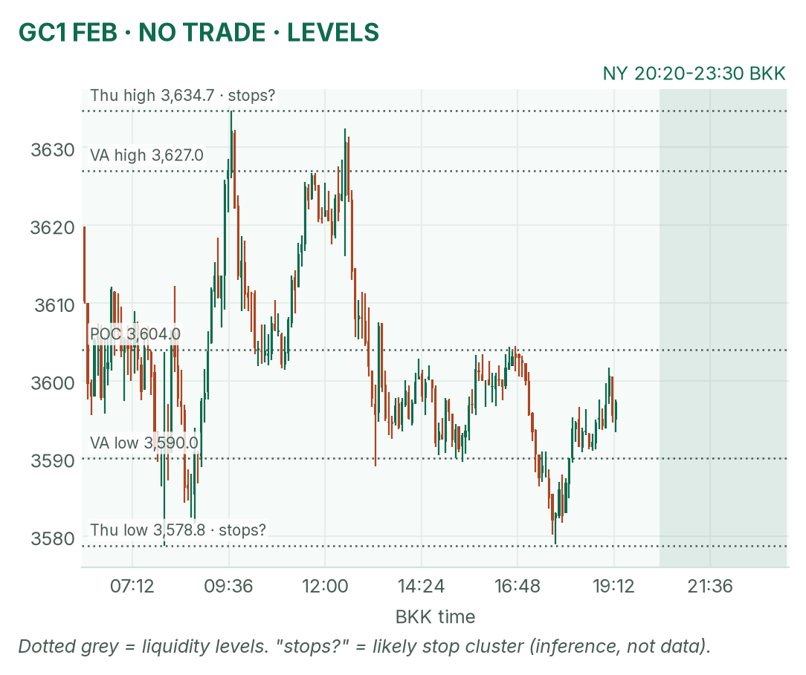
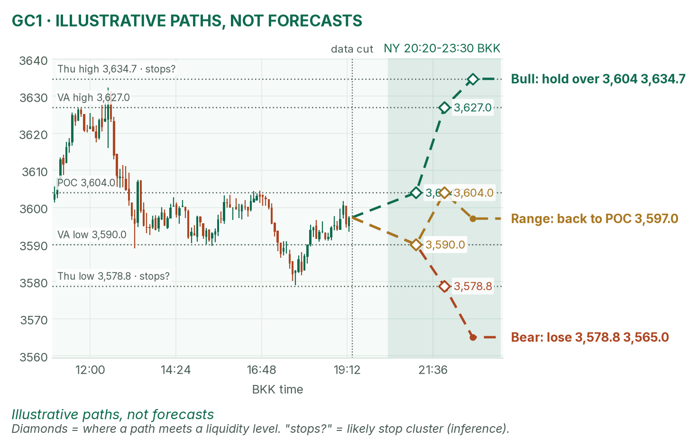
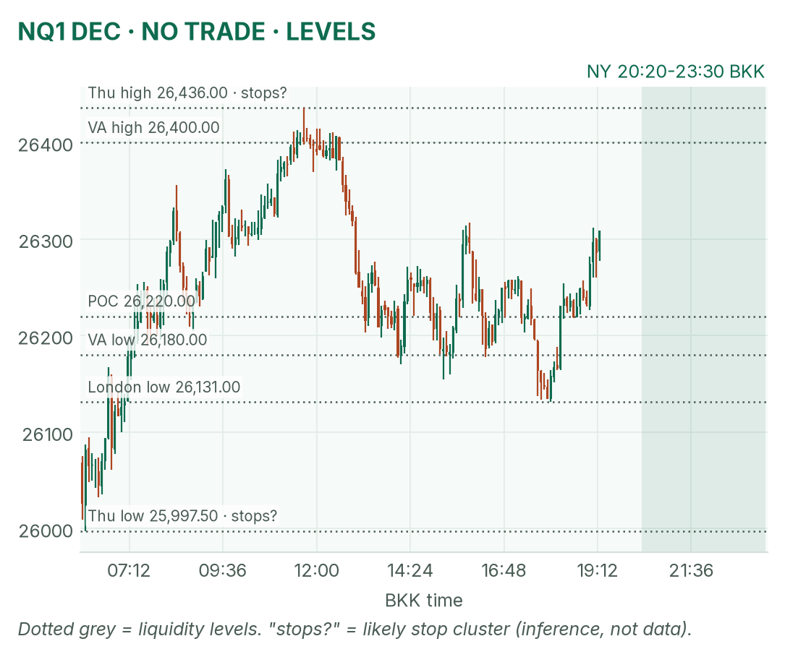
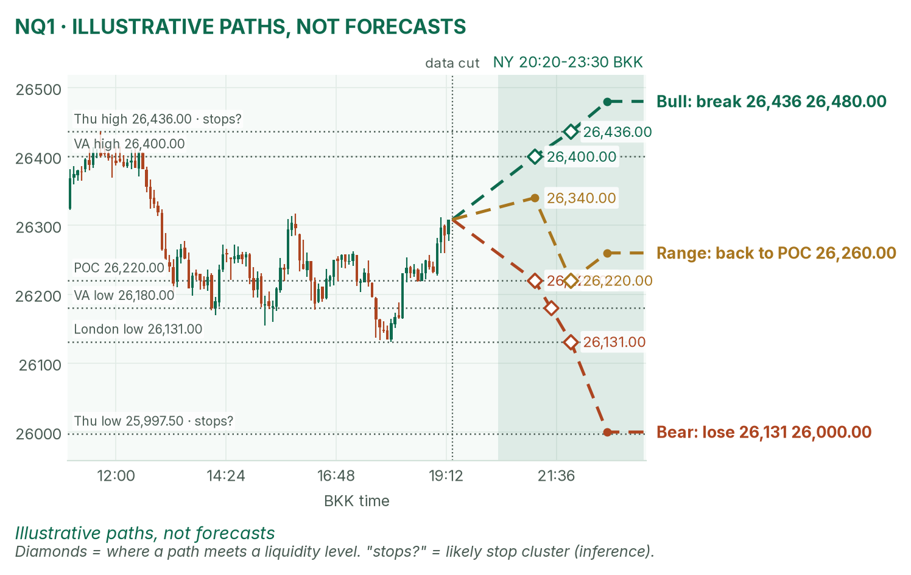

GC: no trade. Holiday-thin volume, and the NY opening-range fade needs a real COMEX open.
NQ: no trade. No 21:30 stock open today, so there is no opening range to break.
Sitting out is a position. Thin markets jump on small orders, and stops slip.
The market story
US Thanksgiving: NYSE, Nasdaq and cash bonds are closed, and there is no US data (April). CME futures trade but halt early. Gold bounced from Wednesday's low on bargain hunting; Nasdaq rose on a global chip rebound (April). But Wednesday's hot core PCE (3.3% a year, forecast 3.2%) still points to a December Fed hike, so treat today's moves as provisional.
Volume tells the story. From 18:20 to 19:20 BKK, gold traded about a fifth of Wednesday's volume at the same hour, and Nasdaq under a third (TopstepX). Your rates lesson: with US bond markets shut, the 10-year yield can't move gold today. That removes gold's usual driver. My bias: rangebound in both, with no edge.
News (BKK)
Time
Event
Forecast
Prior
Read
19:30
ECB minutes
–
–
Euro decider, before the window. Hawkish: euro up, dollar softer, small lift for gold.
All day
US holiday: no US data, no stock open
–
–
No 21:30 open. Thin trade.
23:30
Europe's close
–
–
Liquidity thins further.
Fri 01:00 / 02:30
CME halts NQ / gold
–
–
After the window.
No-trade zone 19:25–19:32 (ECB minutes). No forecast or whisper number applies to minutes. Source: April's brief (XTB, Danske Bank; halt times CME Group via LPF, DTN).
Levels to watch
Level
GC (Feb)
NQ (Dec)
Wednesday low
3,453.8
25,027.50
Wednesday settle
–
26,100.25 (April)
Overnight high / low (since 06:00)
3,634.7 / 3,578.8
26,436.00 / 25,997.50
London high / low (since 14:00)
3,604.5 / 3,579.0
26,317.00 / 26,131.00
Overnight POC
3,604
26,220
Overnight value area
3,590–3,627
26,180–26,400
Gold contract: TopstepX's active gold is now February; December is in delivery. April quotes December (3,563.6 at 18:24), about $30 lower. Use your chart's contract.
Gold (GC1)
Bias: neutral. Gold sits at 3,597, just under its 3,604 POC (the busiest overnight price) and inside its 3,590–3,627 value area (where 70% of volume traded). There's no yield move to push it and no US data. My NY rule fades the 20:20 COMEX opening range back to the POC, but price is already at the POC. That leaves no room to a target.
The trade: no trade
No lead idea today. Probability of a clean setup is low, and holiday fills can slip past stops.

GC Feb 5-minute bars into 19:20. The Asia pop to 3,634.7 faded back into the value area.

Illustrative paths, not forecasts.
Scenarios to watch
Bullish: a 5m close above 3,604 that holds. Aims for 3,627, then 3,634.7.
Bearish: a 5m close below 3,578.8. Aims for about 3,565 (no level there; stops likely under the low, inference).
Mean reversion: a push to 3,590 or 3,627 that stalls. Aims back to the 3,604 POC.
Nasdaq (NQ1)
Bias: neutral. NQ is at 26,308.50, inside its 26,180–26,400 value area, above the 26,220 POC. My NY setup is the 21:30–21:35 range breakout after the stock open. Today there is no stock open, so the setup doesn't exist.
The trade: no trade
No lead idea today. Without a stock open, breakouts on thin volume often snap back.

NQ 5-minute bars into 19:20. The 26,436 high came at 11:41; London held above 26,131.

Illustrative paths, not forecasts.
Scenarios to watch
Bullish: a 5m close above 26,436. Aims for about 26,480 (stops above the high, inference).
Bearish: a 5m close below 26,131. Aims for 25,997.50, then 26,000 round.
Mean reversion: a stall at 26,400. Aims back to the 26,220 POC.
6E: context only; the ECB minutes at 19:30 set the tone.
Before you click
ORB bases. GC NY: 20:20 COMEX open until a 2-minute candle's volume drops below half the first two's average, fade to POC. NQ NY: 21:30–21:35 range, trade breakouts (no stock open today). GC and 6E London: 15:00–15:30 range (fade gold, break the euro).
Checklist. 1) Room to today's max loss? 2) Within daily rules? 3) No release within 30 minutes? 4) Agrees with the bias? 5) At a marked level? 6) Setup tagged? 7) Entry, stop, 1R partial, target set? 8) Calm, not chasing?
Reset (60 seconds). Hands off the mouse. Breathe in 4, hold 4, out 6, five times. Name the feeling in one word. "Eager" or "frustrated"? Wait 5 minutes.